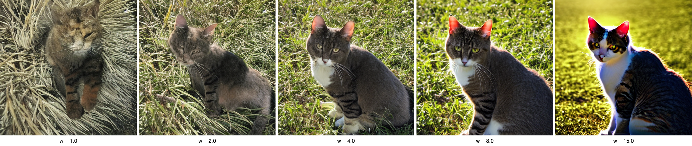

Classifier guidance works, but it needs a separate classifier trained on noisy images, which is expensive and inflexible. What if one model could guide itself? The answer is classifier-free guidance: randomly drop labels during training so the model learns both conditional and unconditional prediction, then extrapolate between them at sampling time. This single trick, random label dropout during training, is behind every modern text-to-image system.
- You want to understand classifier-free guidance, the technique behind modern image generators
- You understand conditional vs. unconditional generation from Lecture 8
9.1 The Training Trick: Random Label Dropout
What if we could get guidance without any classifier at all? The key idea from classifier-free guidance, or CFG (Ho & Salimans, 2022), is straightforward: train a single model that can make both conditional and unconditional predictions.
During training, with probability $p_\text{uncond}$ (typically 10–20%), we replace the class label with a special null token, the extra embedding at index num_classes that we set up in Lecture 8. The rest of the time, we train normally with the real class label.
When the model receives the null token, it still sees a training image from some class, but it has no idea which one. It has to learn a general-purpose noise prediction that works across all classes, with no bias toward any particular output. This unconditional prediction becomes the baseline that CFG extrapolates away from at sampling time.
With this dropout, the same network learns two skills:
- $\epsilon_\theta(x_t, t, c)$ — conditional noise prediction (when given a real class label)
- $\epsilon_\theta(x_t, t, \varnothing)$ — unconditional noise prediction (when given the null token)
num_classes (e.g., index 10 for 10 classes labeled 0–9) is what tells the model "there is no class; predict noise unconditionally."
9.2 The Guidance Formula
Now that training has given the model both conditional and unconditional skills, here's how we exploit them at inference. For each denoising step, we run the model twice: once with the class label, once with the null token. Then we extrapolate in the direction of the conditioning signal:
$$\hat{\epsilon} = \epsilon_\text{uncond} + s \cdot (\epsilon_\text{cond} - \epsilon_\text{uncond})$$The term $(\epsilon_\text{cond} - \epsilon_\text{uncond})$ is the conditioning signal: it captures exactly what's different about the model's prediction when it knows the class versus when it doesn't. The guidance scale $s$ controls how aggressively we amplify this difference.
The Guidance Scale s
- $s = 0$: pure unconditional generation (the $\epsilon_\text{cond}$ term vanishes)
- $s = 1$: standard conditional generation (the formula reduces to just $\epsilon_\text{cond}$)
- $s > 1$: amplified conditioning — sharper, more "on-topic" outputs
Typical values: $s = 2$–$4$ for class labels, $s = 7.5$–$15$ for text-to-image (Stable Diffusion defaults to $s = 7.5$).
Two Forms of the Same Formula
The CFG formula can be written in two equivalent ways. Both are widely used, and you should recognize each on sight.
Form 1 — Extrapolation:
$$\hat{\epsilon} = \epsilon_\text{uncond} + s \cdot (\epsilon_\text{cond} - \epsilon_\text{uncond})$$Form 2 — Weighted combination:
$$\hat{\epsilon} = (1 - s) \cdot \epsilon_\text{uncond} + s \cdot \epsilon_\text{cond}$$To see these are the same, expand Form 1:
$\hat{\epsilon} = \epsilon_\text{uncond} + s \cdot \epsilon_\text{cond} - s \cdot \epsilon_\text{uncond} = (1 - s) \cdot \epsilon_\text{uncond} + s \cdot \epsilon_\text{cond}$
Form 1 makes the amplification interpretation clearer, since we're adding $s$ times the conditioning signal. Form 2 reveals that it's a weighted combination: when $s = 1$, it's pure conditional; when $s > 1$, we're extrapolating beyond the conditional prediction, which is why guided outputs look sharper than standard conditional ones.
Efficient Implementation: Batched Forward Pass
Running the model twice per step sounds expensive. In practice, we batch the conditional and unconditional inputs into a single forward pass:
This doubles the batch size for one forward pass instead of requiring two separate passes. On GPUs, this is much more efficient than two sequential calls.
9.3 Why CFG Works: The Implicit Distribution
CFG has a clean mathematical basis beyond its heuristic appeal. The derivation starts from Bayes' rule.
From Noise Prediction to Score Functions
Recall from Lecture 7 that the noise prediction $\epsilon_\theta$ is related to the score function (gradient of the log-density):
$$\nabla_{x_t} \log p(x_t) \approx -\frac{\epsilon_\theta(x_t, t)}{\sqrt{1 - \bar{\alpha}_t}}$$So the CFG formula in score space becomes:
$$\nabla_{x_t} \log p_\text{cfg}(x_t \mid c) = (1 - s) \cdot \nabla_{x_t} \log p(x_t) + s \cdot \nabla_{x_t} \log p(x_t \mid c)$$The Bayes Step
Now we use Bayes' rule to rewrite the conditional score. Since $p(x_t \mid c) = p(c \mid x_t) \cdot p(x_t) / p(c)$, taking log-gradients (with respect to $x_t$, so $\log p(c)$ vanishes):
$$\nabla_{x_t} \log p(x_t \mid c) = \nabla_{x_t} \log p(x_t) + \nabla_{x_t} \log p(c \mid x_t)$$Substituting this into the CFG formula:
$$\nabla_{x_t} \log p_\text{cfg} = (1 - s) \cdot \nabla_{x_t} \log p(x_t) + s \cdot \left[\nabla_{x_t} \log p(x_t) + \nabla_{x_t} \log p(c \mid x_t)\right]$$ $$= \nabla_{x_t} \log p(x_t) + s \cdot \nabla_{x_t} \log p(c \mid x_t)$$The Implicit Distribution
This score corresponds to sampling from the distribution:
$$p_\text{cfg}(x \mid c) \propto p(x) \cdot p(c \mid x)^s$$Or equivalently, using Bayes' rule once more ($p(c \mid x) = p(x \mid c) \cdot p(c) / p(x)$):
$$p_\text{cfg}(x \mid c) \propto p(x \mid c)^s \;/\; p(x)^{s-1}$$The Diversity-Fidelity Tradeoff
- $s = 1$: diverse outputs, but some samples are ambiguous or low-quality
- $s = 4$: most samples are sharp, clear, on-topic — some diversity lost
- $s = 10$: very sharp, but all samples start looking similar — diversity severely reduced
This tradeoff is fundamental. Nearly all state-of-the-art results use $s > 1$ because users generally prefer sharp, coherent outputs over diversity. Finding the right $s$ is often a matter of taste and application.
9.4 Beyond Class Labels
Everything we've covered so far uses class labels, a single integer per image. But the real power of CFG emerges when the conditioning signal grows richer: text prompts, segmentation maps for spatial control, keypoints for pose conditioning, depth maps, edge sketches. CFG doesn't care what the condition is, only that the model can make predictions with and without it. The real power comes from control: you can steer the model toward desirable conditions and away from undesirable ones, and you choose both. Text-to-image is the most prominent example, and it's how Stable Diffusion, DALL-E, and Imagen work.
Example: The Text-to-Image Pipeline
The path from text prompt to generated image has three stages:
- Encode the text. A pretrained text encoder (CLIP or T5) converts the prompt into a sequence of embedding vectors. "A cat sitting in sunlight" becomes a small matrix of shape $(\text{seq\_len}, d_\text{text})$, one vector per token.
- Inject via cross-attention. Inside the U-Net, each spatial position in the image attends to every token in the text sequence. Queries come from the image features, keys and values come from the text embeddings. This is how each region of the image learns which words matter to it.
- Apply CFG. During training, randomly replace the text embedding with an empty-string embedding. During sampling, combine text-conditioned and unconditional predictions using the same CFG formula from Section 9.2.

"A photograph of a cat sitting in sunlight" generated with Stable Diffusion v1.5 at guidance scales w = 1, 2, 4, 8, and 15. At w = 1 (no amplification), the image is soft and unfocused. The sweet spot around w = 4–8 produces sharp, vivid results. At w = 15, colors oversaturate and artifacts appear.
We won't implement text conditioning in this course (it requires pretrained text encoders), but understanding the architecture is important. The guidance mechanism is identical: CFG doesn't care whether the conditioning is a class integer or a text embedding. The same random-dropout training and conditional/unconditional combination at inference applies either way.
9.5 Negative Prompts
If you've used Stable Diffusion, you've probably entered a "negative prompt," text describing what you don't want. This feature falls directly out of the CFG framework with one small modification.
In standard CFG, the unconditional prediction $\epsilon_\text{uncond}$ serves as the "baseline" we extrapolate away from:
$$\hat{\epsilon} = \epsilon_\text{uncond} + s \cdot (\epsilon_\text{cond} - \epsilon_\text{uncond})$$With negative prompts, we replace $\epsilon_\text{uncond}$ with $\epsilon_\text{neg}$ — the model's prediction conditioned on the negative prompt:
$$\hat{\epsilon} = \epsilon_\text{neg} + s \cdot (\epsilon_\text{cond} - \epsilon_\text{neg})$$Now instead of extrapolating away from "nothing" (unconditional), we're extrapolating away from "blurry, low quality, deformed" and toward "sharp photo of a cat." The model steers away from the negative prompt and toward the positive prompt.
Since the negative prompt replaces the unconditional prediction, this still requires only two forward passes per step: one for the positive prompt and one for the negative prompt. Some implementations add the unconditional prediction as a third pass for more fine-grained control, but the standard approach is a simple two-pass substitution.
9.6 The Complete CFG Sampling Pipeline
Let's put it all together. Here's the full classifier-free guidance sampling algorithm — this is what runs inside every modern conditional diffusion system.
autograd.grad. The guidance comes entirely from the diffusion model itself: the difference between its conditional and unconditional predictions.
9.7 PyTorch Reference
Training with label dropout — the only change from Lecture 8's conditional training:
And the full CFG sampling loop: